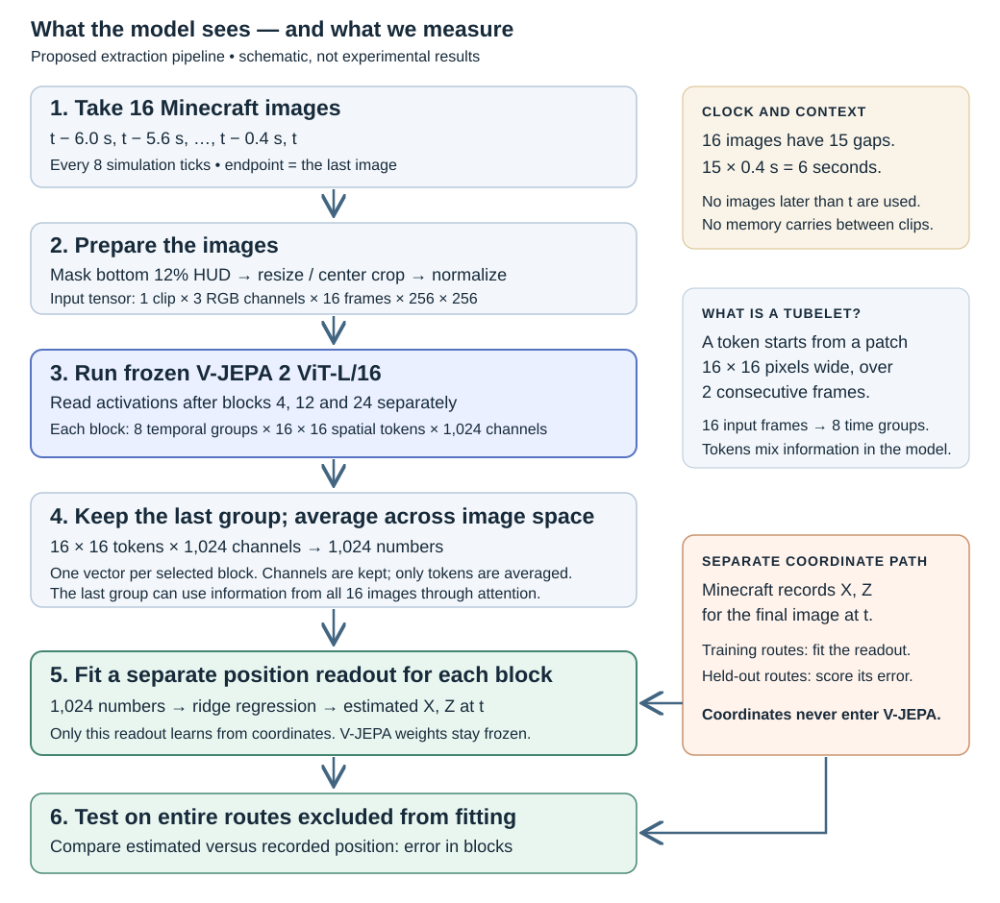
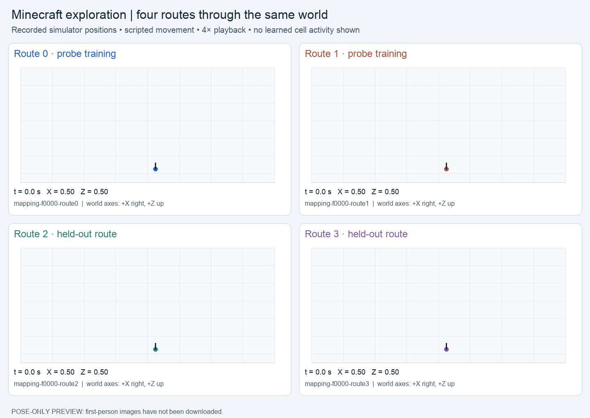

Research goal: test whether a frozen pretrained model encodes a cognitive map within each Minecraft world: the same place should remain recognizable across independently recorded routes and changed headings, and nearby places should have a meaningful representational relationship. Cross-world absolute-coordinate decoding is a secondary diagnostic. V-JEPA 2 is a video model, not a video-language model; a later comparison must use an actual video-language model. Short clips cannot establish persistent episode-long memory.
Current result: the eight-environment dataset passed raw-frame verification and frozen V-JEPA extraction. The first position probe shows no convincing location decoding on held-out environments. Route and coverage limitations remain; these results do not settle whether other spatial information is present in the encoder.
New direction, 20 October 2026. The subject is the frozen V-JEPA 2 ViT-L/16 encoder. No GRU, hippocampal module, odometry input or trained spatial code is attached. Minecraft coordinates supervise the measurement probe, never the encoder.
Status: real Minecraft recordings and a frozen-model pilot result. The old g/p visualizations describe a separately trained memory network and are not evidence about this encoder.

16 RGB frames → official deterministic preprocessing → frozen video transformer → raw channels after blocks 4, 12 and 24 (zero-based hooks 3, 11, 23). There are 1,024 native channels per token. We average the 16×16 spatial tokens in the final temporal tubelet. These are native model channels, not a new 32-number memory. The encoder attends throughout the clip; the label is the last frame's X,Z. No frames after that endpoint enter its prediction.
The initial cadence is one image per 8 simulation ticks (0.4 s), so 16 frames span 6 seconds. This is a declared sampling choice, not a claim about the optimal pretrained cadence. We must compare context lengths/cadences later. The fixed bottom 12% HUD band is masked. There is no persistent state between clips.
Oscar gates passed (26 October 2026): verification job 7981445 reported state=complete; all 3,257 source PNG byte hashes matched their recorded SHA-256 values, and every image had the required RGB mode and dimensions. The report's dataset digest is 610806ba4ce5f7001b049056af2cd311dd62497e600dd98750be47881ded177c. The first model smoke failed during Python import (job 7981775); after a job-local libbz2 compatibility link, retry job 7982755 completed with Extracted 1/1 in its log. Full extraction job 7982818 reported state=complete and 188 clips (4.5 MB). These are pipeline checks, not spatial representation claims.
The metadata audit found 16 complete routes and 3,257 recorded frames. Before using them, spatial_video_dataset.py hashes every PNG on Oscar, checks RGB format and dimensions, validates the recorded specifications, and counts eligible clips. It excludes the first 72 ticks of scripted camera scanning from model clips. This verification creates a small report; it does not load the video model.
| Environment IDs | Probe role | Routes |
|---|---|---|
| 00–03 (room, outdoor area, indoor maze, outdoor maze) | Train | Route 0 fits the readout; route 1 is held out within the same environment. |
| 04–05 (forest, mine) | Validation | Both routes choose ridge regularization. No fitting on these environments. |
| 06–07 (hills, village) | Test | Both routes are untouched until final evaluation. |
This fixed split yields 188 nonoverlapping 16-frame clips in the metadata preflight: 49 train, 47 route-heldout, 57 validation, and 35 test. One authored world per category means the environment-heldout result is exploratory across different categories; it does not estimate generalization to new worlds within a category. Maze and mine route pairs overlap heavily, so within-environment route testing alone cannot establish allocentric invariance. No gridness score or place-cell label follows from this pilot.
The CPU probe completed and its 60 KB review JSON is local. The table gives the mean of per-episode mean X,Z errors in Minecraft blocks; lower is better. Four held-out routes share training worlds, while the validation and test columns each contain two unseen worlds and four routes. The training-mean row is the error from always predicting the mean training position.
| Readout input | Held-out routes | Validation: forest, mine | Test: hills, village |
|---|---|---|---|
| Training-mean position | 9.89 | 9.49 | 10.08 |
| Video, block 4 | 9.70 | 9.41 | 10.24 |
| Video, block 12 | 9.96 | 8.87 | 10.27 |
| Video, block 24 | 9.45 | 9.41 | 10.13 |
| Repeat final frame, block 12 | 9.91 | 9.55 | 10.60 |
| Heading and elapsed time | 9.89 | 9.49 | 10.07 |
Interpretation: video block 12 reduces validation error by 0.62 blocks, mainly in the mine (7.77 and 7.99 versus mean-position errors of 8.93 and 8.61). It does not transfer to the held-out test worlds: 10.27 versus 10.08 for the mean-position baseline. Video block 24 improves held-out-route error by 0.44 blocks but gives essentially no test gain. Every representation and control selected the largest ridge penalty tested, alpha=1000, on validation. The circular-shift-label control and repeated-frame condition do not establish a consistent temporal advantage. These four test routes are correlated and too few for a significance claim.
What this does and does not test: this readout asks a single linear decoder trained on four worlds to predict absolute X,Z in other world categories. Place-like codes may remap between worlds, so a null cross-world result does not show that no within-world place information exists. The next diagnostic should use the existing cached features to compare same-world route-0-to-route-1 place recognition at shared positions, matched and mismatched headings, with video versus repeated-frame inputs. Do not interpret a visually localized channel map as a place cell without stable tuning across independently sampled routes and views.
The spatial_video_within_world.py diagnostic uses the existing 188 cached clips. In each world it treats route 0 clips as the reference set and route 1 clips as queries. It centers each 1,024-channel representation using only the unlabeled route-0 vectors, retrieves the most similar reference by cosine similarity, then uses simulator XYZ and heading only to score whether the match is nearby, including revisits with at least a 90° heading change. It also compares cosine similarity of nearby and distant places, and runs the same procedure on repeated-final-frame features. No readout is trained on test-world poses. The reference set is an external retrieval aid; even successful matching would not show that V-JEPA internally maintains a map over the exploration episode.
Coverage gate: the metadata preflight finds only 28 route-1 queries across all eight worlds with a route-0 clip within two blocks at a heading difference of at least 90°. The village has zero; room, outdoor area, outdoor maze and hills have only one or two each. Conditional metrics with fewer than three queries or pairs are left blank rather than treated as evidence. These sparse, correlated clips can reveal a failure or a promising signal, but cannot establish a stable cognitive map. Hills use 3D XYZ distance so elevation is not flattened.
cd ~/projects/zef-binding mkdir -p logs features="/oscar/scratch/$USER/zef-binding/runs/spatial-video-features-7982818" dataset="/oscar/scratch/$USER/zef-binding/runs/diverse-dataset-v2-20261022-153938" job=$(sbatch --parsable scripts/slurm/spatial_video_within_world.sbatch "$features" "$dataset") echo "$job" # After completion, inspect this small JSON: cat "/oscar/scratch/$USER/zef-binding/runs/spatial-video-withinworld-$job/report.json"
cd ~/projects/zef-binding mkdir -p logs dataset="/oscar/scratch/$USER/zef-binding/runs/diverse-dataset-v2-20261022-153938" verify_job=$(sbatch --parsable scripts/slurm/diverse_video_verify.sbatch "$dataset") printf 'Verification job: %s\n' "$verify_job" # After the job completes, inspect these before using the model: cat "/oscar/scratch/$USER/zef-binding/runs/diverse-video-verify-$verify_job/status.json" cat "/oscar/scratch/$USER/zef-binding/runs/diverse-video-verify-$verify_job/report.json"
The full extraction refuses this dataset without a complete verification report matching its metadata digest and split protocol. It also rechecks the hashes of every clip it actually reads. After verification, use the existing prepared spatial-video environment and official V-JEPA checkpoint for a one-clip smoke check:
export SPATIAL_PYTHON="/oscar/scratch/$USER/zef-binding/envs/spatial-video/bin/python" export VJEPA_REPO="/oscar/scratch/$USER/zef-binding/vendor/vjepa2" export VJEPA_CHECKPOINT="/oscar/scratch/$USER/zef-binding/checkpoints/vitl.pt" verification="/oscar/scratch/$USER/zef-binding/runs/diverse-video-verify-$verify_job/report.json" sbatch scripts/slurm/spatial_video.sbatch smoke "$dataset" "$verification"
For the completed verification job, set verify_job=7981445 in a fresh shell before constructing verification.
The one-clip smoke and full 188-clip extraction have passed. The next job is the CPU-only probe:
features="/oscar/scratch/$USER/zef-binding/runs/spatial-video-features-7982818" cat "$features/status.json" # complete, 188 clips probe_job=$(sbatch --parsable scripts/slurm/spatial_video_probe.sbatch "$features") echo "$probe_job" # After completion, inspect the small analysis JSON on Oscar: cat "$features/analysis/review.json"
The earlier 20-trajectory collection remains separate. Keep all raw frames and feature caches on Oscar; transfer only small review JSON.
Four actual recorded trajectories in geometry f0000, animated together at 4× speed. These panels show simulator coordinates, not learned maps or cell activations. First-person RGB is still on Oscar.

output/spatial-video/recorded-routes.gif · Static PNG for slidesClip audit: the original timestamp-phase filter retained only one clip per held-out route. The corrected extractor allows any starting phase with exact eight-tick spacing and no overlapping windows: 230 clips total, including eight per held-out route. Training routes retain 15 each. Re-extract before interpreting new results; this change is not a model improvement. Dense gridness coverage remains unestablished.
| Component | Implemented pilot |
|---|---|
| Collection | Five existing deterministic safe Minecraft geometries × four intersecting-loop routes. Scripted movement; poses and actions recorded alongside RGB. All 20 routes must complete. |
| Training the probe | Routes 0/1 in three geometries. Encoder remains frozen. |
| Primary evaluation | Routes 2/3 in those same three geometries, entirely excluded from fitting. |
| Other scenes | One geometry for ridge regularization selection; another for final geometry-heldout evaluation. All worlds share the collector's coordinate convention. |
| Controls | Repeated last image through the same video encoder; heading and elapsed-time regression; training-mean location; circularly shifted training labels within each trajectory. |
| Outputs | Episode-level error in Minecraft blocks; signed channel maps and occupancy; small review JSON. Native token caches are opt-in with a storage cap. |
We reuse the collector only. Existing Qwen feature caches cannot be converted to V-JEPA inputs. This pilot is a plumbing and route-decoding test. Its loop paths are insufficient for convincing gridness analysis: the implementation intentionally does not produce a grid-cell score from them.
Prepare a new, separate environment using the official V-JEPA dependencies.
Do not install into or repair the model/render environments used by other jobs.
The separate environment also needs this project's package dependencies (pip install -e .).
Use a clean local checkout of the official V-JEPA repository and its ViT-L checkpoint from the official model table.
Extraction records the repository commit and checkpoint SHA256. No automatic model download occurs in our script.
The existing render environment must already pass its import check. If it is broken, stop and arrange a separate render environment; this script does not repair it. GPU memory and the real checkpoint forward pass remain unverified.
cd ~/projects/zef-binding mkdir -p logs export SPATIAL_PYTHON="/oscar/scratch/$USER/zef-binding/envs/spatial-video/bin/python" export MC_RENDER_PYTHON="/oscar/scratch/$USER/zef-binding/envs/render/bin/python" export VJEPA_REPO="/oscar/scratch/$USER/zef-binding/vendor/vjepa2" export VJEPA_CHECKPOINT="/oscar/scratch/$USER/zef-binding/checkpoints/vitl.pt" # After the separate environment and checkpoint have been prepared: sbatch scripts/slurm/spatial_video.sbatch collect # First verify one real clip and the official checkpoint: sbatch scripts/slurm/spatial_video.sbatch smoke \ "/oscar/scratch/$USER/zef-binding/runs/spatial-video-data-COLLECTION_JOB" # Once the smoke status is smoke_complete, run full extraction: sbatch scripts/slurm/spatial_video.sbatch extract \ "/oscar/scratch/$USER/zef-binding/runs/spatial-video-data-COLLECTION_JOB" # After extraction, replace EXTRACTION_JOB with its job ID: sbatch scripts/slurm/spatial_video.sbatch probe \ "/oscar/scratch/$USER/zef-binding/runs/spatial-video-features-EXTRACTION_JOB"
Collection is gated before extraction. The smoke mode extracts one real clip and records
smoke_complete; the analysis refuses to treat it as a complete experiment.
The extraction CLI supports --dry-run, --frames, --layers,
--tokens, --smoke, and --max-cache-gb. Default full-token saving is off.
Output directories cannot overwrite earlier runs.
Download only analysis/review.json initially. Keep frames, model weights and full activation caches on Oscar.
The initial default produces signed channel maps as NPZ arrays; publication figures and GIFs should be built
after checking real coverage and results, not from synthetic placeholders.
Randomly initialized encoder, shuffled-frame and alternative image/video model controls are subsequent work. The repeat-image condition is a temporal-context ablation, not a separately pretrained image-model baseline. No policy, gridness significance or causal patching result is claimed by this pilot.
Frozen inference tests whether representations already exist. Studying when they emerge or “converge” requires comparing pretraining checkpoints or a separately declared fine-tuning experiment.
The official V-JEPA repository provides ViT-L/16 at 256-pixel resolution. It is a video representation model, not a language model or a Minecraft navigation policy. Our wrapper follows the official encoder construction and preprocessor.
Interpreting Physics in Video World Models uses layerwise probing and interventions to investigate distributed physical representations. Our proposed extension asks about spatial location and route invariance in Minecraft. Its physics findings do not establish grid or place cells in our data.
27,572,966,264 bytes of old downloaded navigation/RL media and checkpoints were removed. Source, notebooks, JSON, logs, analysis and presentation-linked media were retained. Remote copies were not rechecked. Old per-episode HTML may point to removed media. Exact deletion manifest.